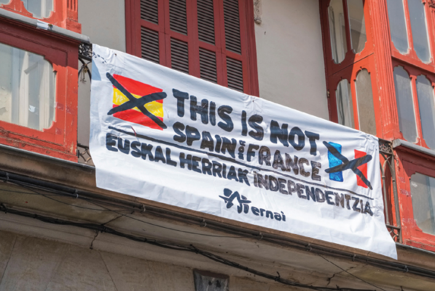

The Basque Nation
Self-determination across the Spain-France border
1. Context

The Basque Country straddles northern Spain and southwest France.

The independence campaign continues, but recent protest is more peaceful.
The Basque Country includes seven provinces: four in Spain and three in France. Its population is more than 3.1 million.
2. Why It Matters
- Distinct nation: Basque people have a strong identity, including the unique Euskara language.
- Culture: traditions remain visible in architecture, food, dance and education.
- Autonomy: Basques have achieved political autonomy, including the Basque parliament.
- Self-determination: Basque nationalists have demanded the right to decide their political future, including possible independence.
Why this challenges borders: the cultural nation crosses an international border. If the Basque Country became independent or united territorially, it would alter the territorial integrity of Spain and France.
3. Conflict and Change
- Basque identity was historically suppressed by French and Spanish governments.
- The separatist group ETA used violence in the past to pursue independence.
- Spain and France viewed separatism as a threat to sovereign power and territorial integrity.
- After ETA's 2011 ceasefire, separatist activity became more peaceful, including campaigns by Ernai.
| Concept | Basque example |
|---|---|
| Nation | A people united by culture, language and identity. |
| Sovereignty | Spain and France retain final authority over their recognised territories. |
| Territorial integrity | Independence would remove land from existing states. |
4. Exam Focus
Use the Basque Country for shorter questions about separatism, self-determination, and the difference between a cultural nation and a sovereign state.